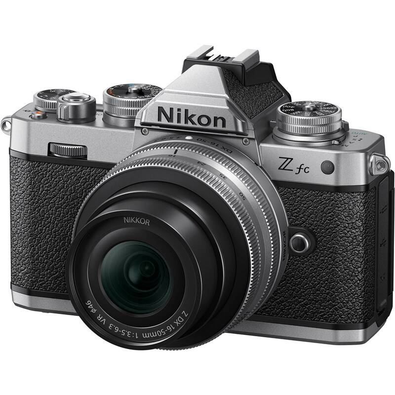
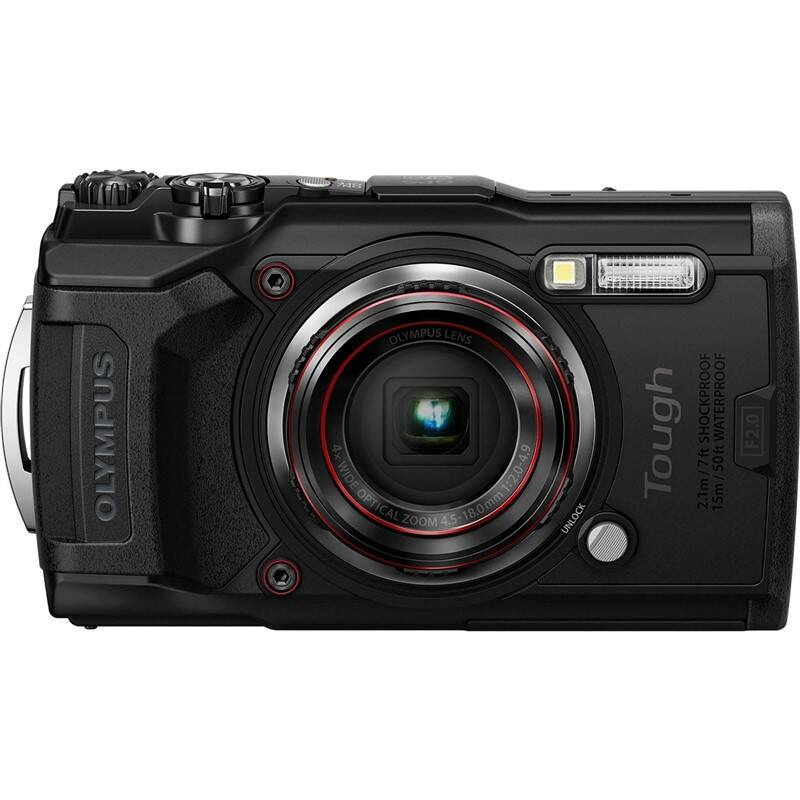
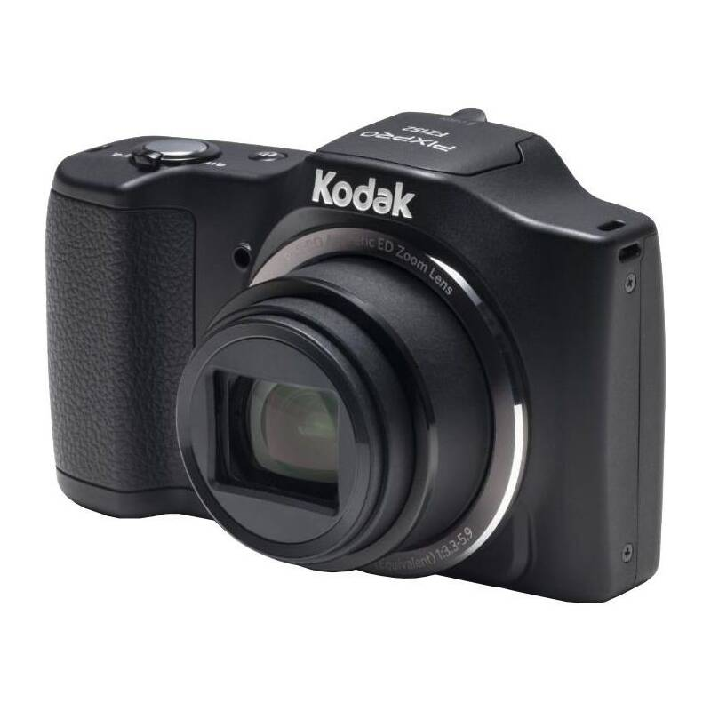
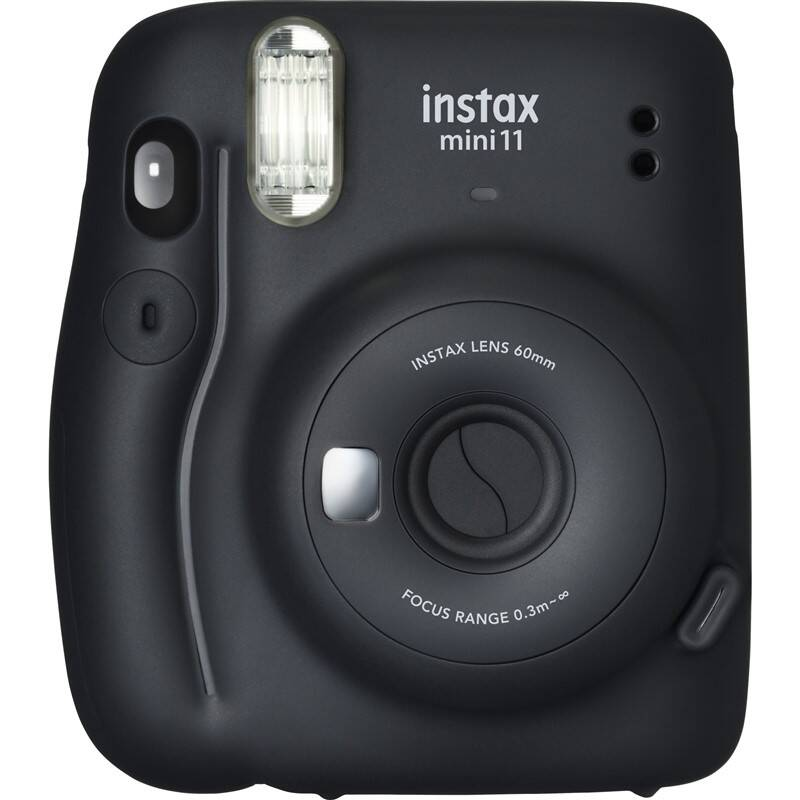

Malý a výkonný bezzrkadlový fotoaparát EOS M50 Mark II celý proces od tvorby obsahu až po jeho publikáciu maximálne zjednodušuje. Umožňuje záznam videa v rozlíšení 4K v orientácii na šírku alebo výšku, či live streamovanie vo Full HD kvalite priamo na YouTube* a pomáha tvorcom povýšiť obsah na novú úroveň.
Kľúčové vlastnosti:
Vyklápací dotykový 3" LCD displej
Farebný elektronický hľadáčik OLED s 2,36 miliónmi bodov
Dual Pixel CMOS AF
SERVO AF 4K vo filme
Výkonný procesor DIGIC 8
Video vo 4K a Full HD kvalite
Citlivosť až 51 200 ISO
Vodotesnosť
Typ batérií: Li-Ion akumulátor
Kompakt s výmenným objektívom
300€
Digitálny fotoaparát Nikon Z fc

Popis
Bezzrkadlovka Nikon Z fc formátu DX spája dizajn klasických fotoaparátov s inovatívnymi technológiami rady Z pre dosiahnutie vynikajúcej kvality obrazu s 20,9 miliónmi pixelov, ktorá posunie vašu tvorivosť na úplne novú úroveň. Nie je dôležité, na akom mieste a aký spôsob zachytávania skutočnosti si zvolíte, pretože vždy dosiahnete špičkové výsledky, či už budete tvoriť statické snímky, videá, vlogy či akýkoľvek iný obsah. K dispozícii potom máte 20 zabudovaných predvolieb Creative Picture Control, kedy výsledné efekty môžete skontrolovať v reálnom čase aj počas snímania.
Kľúčové vlastnosti:
20,9 Mpx snímač a ISO od 100 do 51 200 na kvalitné snímanie aj po zotmení
Otočný a výklopný monitor
Možnosť natáčať videá v 4K kvalite
Robustné telo z horčíkovej zliatiny má charakteristický retro vzhľad
Panel s ukazovateľom hodnoty clony a presné ovládacie prvky
Elektronický hľadáčik s pohodlným kruhovým okulárom
Vďaka nízkej hmotnosti si ho môžete vziať na každú svoju výpravu
20 kreatívnych filtrov a efektov s voliteľnou intenzitou
Všestranný zoomovací objektív s nízkou hmotnosťou a kompaktnými rozmermi
Tichý príkazový krúžok
560€
Digitálny fotoaparát Olympus TG-6

Popis
Chopte sa svojho TG-6 a pustite sa do nových dobrodružstiev. Tento fotoaparát je ideálny parťák, ktorý bez ohľadu na podmienky zachytí každý strhujúce okamih vašej cesty. Široká paleta príslušenstva obohatí Vaše outdoorové zážitky a vybaví Vás aj na najnáročnejšie dobrodružstvo.
Kľúčové vlastnosti:
širokouhlý objektív (25 – 100 mm) so svetelnosťou F2 a 4× optickým zoomom
obrazový procesor TruePic VIII
natáčanie do 4K a spomalené Full HD videá
prachotesnosť
vodotesnosť do 15 m
nárazuvzdornosť do 2,1 m
tlakuvzdornosť do 100 kg
mrazuvzdornosť do -10 °C
12 Mpx CMOS snímač
Wi-Fi a GPS
1200€
Digitálny fotoaparát Kodak Friendly Zoom FZ152

Popis
Predstavujeme vám fotoaparát Kodak FZ152 z radu Friendly Zoom vhodný pre všetkých používateľov, ktorí hľadajú kompaktný prístroj do vrecka s kvalitným snímačom a veľkým priblížením. Spolu s kompaktnými rozmermi určite každý ocení kvalitný 16MPix CCD snímač s optickou stabilizáciou OIS, 15x optický zoom a nízku váhu, ktoré mu zaistia potrebné miesto medzi vecami, ktoré si beriete so sebou každý deň.
Kľúčové vlastnosti:
15× násobný optický zoom
Širokouhlý objektív 24mm
16Mpx snímač CCD
Optická stabilizácia obrazu (OIS)
3'' LCD displej
Nahrávanie plynulého 720p HD videa
Digitálny kompakt
Objektív PIXPRO Aspheric ED Zoom Lens
Optická stabilizácia
HD video (1280 × 720 px)
360€
Digitálny fotoaparát Fujifilm mini 11

Popis
Namierte na snímaný objekt, stlačte spúšť a počas krátkej chvíľky už držíte v ruke vytlačený snímok. Tak presne takto jednoducho funguje moderný instantný fotoaparát Fujifilm Instax mini 11. Ide o kompaktný prístroj, v ktorom je zabudovaná miniatúrna tlačiareň, ktorá dokáže produkovať klasické fotky s rozmermi 86 × 54 mm. Jej zásluhou môžete darovať hotové snímky svojim blízkym už o 90 sekúnd po ich vyhotovení.